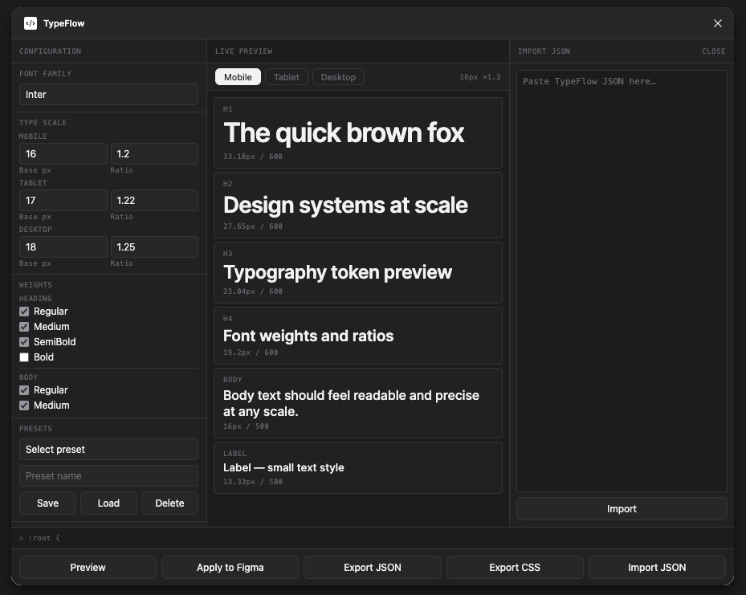

Generate typography systems,
not just text styles.
TypeFlow turns a few inputs — family, scale, ratio, weights — into a complete responsive type system. Bind it to Figma variables, export as JSON or CSS, and keep design and code in sync.

One workflow from design rules to usable outputs.
TypeFlow connects decisions that are usually scattered across styles, variables, exports, and handoff notes.
Generate type scales
Use base size and ratio to create proportional hierarchies for headings, body, and captions.
Bind styles to variables
Create text styles and typography variables, then connect them so the system stays editable.
Export JSON / CSS
Turn design decisions into structured data and developer-friendly outputs for handoff.
Multi-device modes
Define separate mobile, tablet, and desktop logic instead of relying on one static scale.
Import and reuse
Bring saved TypeFlow JSON back into the plugin to restore or continue a system.
Save presets
Store repeated configurations for product systems, experiments, or future iterations.
Typography decisions scatter. TypeFlow keeps them together.
Every team has the same problem: type decisions live in Figma, Notion docs, Slack threads, and developer memory — and they drift apart.
Static scales break across devices
Define mobile, tablet, and desktop ratios once. TypeFlow generates all three as a connected system — not three separate files.
Handoff loses the rationale
Export a structured JSON token file that carries font family, sizes, weights, and ratios — so developers implement the system, not a screenshot.
Figma styles and code diverge
Bind text styles to Figma variables directly from the plugin. When the scale changes, update the binding — not every style individually.
Designed around relationships, not arbitrary sizes.
A typography system should be easy to adjust without manually rewriting every text style. TypeFlow uses base size + ratio to keep hierarchy proportional and reusable.
{ "h1": { "fontSize": { "mobile": 33, "tablet": 37, "desktop": 44 }, "lineHeight": { "mobile": 40, "tablet": 44, "desktop": 56 }, "letterSpacing": { "mobile": -0.82, "tablet": -0.92, "desktop": -1.1 } } }
Two output formats. One source of truth.
TypeFlow generates a JSON token file and a CSS variable sheet from the same configuration — ready for design systems, build pipelines, and developer handoff.
{ "family": "Inter", "h1": { "mobile": { "size": 33, "lh": 40 }, "desktop": { "size": 44, "lh": 56 } }, "body": { "mobile": { "size": 16, "lh": 24 }, "desktop": { "size": 18, "lh": 28 } } }
Structured token file you can import back into TypeFlow, feed into a design token pipeline, or version-control alongside code.
:root { --tf-h1-size-mobile: 33px; --tf-h1-size-desktop: 44px; --tf-h1-lh-mobile: 40px; --tf-h1-lh-desktop: 56px; --tf-body-size-mobile: 16px; --tf-body-lh-mobile: 24px; --tf-family: Inter, sans-serif; }
Ready-to-use CSS custom properties you can drop into any codebase. Named by the tf. prefix you set in Configuration.
Define once, generate across the system.
The goal was not to automate everything, but to make the system more reliable by generating connected outputs from the same logic.
Try TypeFlow as a local Figma plugin.
Download the project from GitHub, import the manifest into Figma, and generate your first typography system.